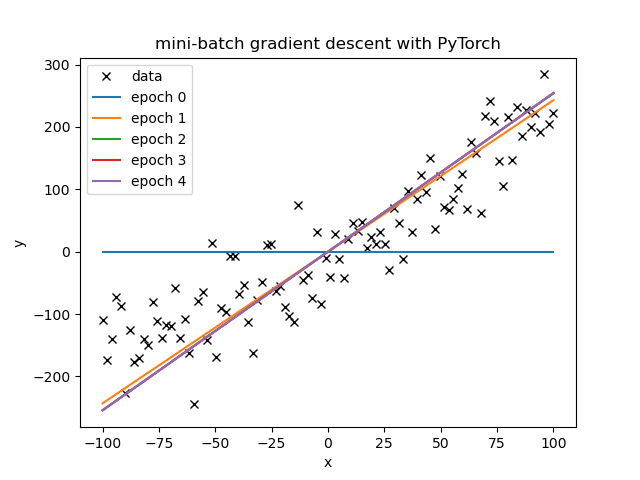

PyTorch Examples
Table of Contents
A repository of machine learning notes and python scripts, scripts which demonstrate PyTorch in simple scenarios. Each section starts with a simple outline of the learning method, then a discussion on the provided python scripts. The scripts increasingly integrate PyTorch's library.
GitHub does not render my equations very well. For a better experience, view the web version of this README: LINK HERE.
Linear Regression
The ubiquitous linear regression is deployed when we can stomach the assumption that the relationship between the features and the target is approximately linear and the noise is "well-behaved" which I believe means it follows a normal distribution.
Minimizing the mean squared error is equivalent to maximum likelihood estimation of a linear model under the assumption of additive Gaussian noise. [D2L 3.1.3]
Prediction equation
Linear Regression is used to predict a numerical value, \(\hat{y}\), from observations, \(X = \{x_1, x_2, \cdots, x_{n}\}\) with the equation \[\hat{y}(X) = \sum_{i=0}^{n} w_i f_i (X)\] where the linear name (in linear regression) comes from the fact that the equation is linear w.r.t. the weights, \(w_i\).
The combination of function and data point \(f_i (X)\) is called a feature. Features make up the basis for the regression, thus should be unique. The features are up to us; we most only keep the prediction equation linear w.r.t. the weights.
Examples
W can have linear combination of the observations, \[\hat{y} = w_0 x_0 + w_1 x_1 + w_2 x_2 + w_3 x_3\] or a linear combination of polynomials on one data point, \[\hat{y} = w_0 + w_1 x + w_2 x^2 + w_3 x^3\], even a linear combination of special functions with mixed kernel data points, \[\hat{y} = w_0 \left( x_0 +x_3 \right) + w_1 arcsin(x_0) + tanh(x_1^2) + w_3 x_0^5\].
Choosing the features
In the linear regression paradigm, the features are chosen before the optimization. Thus, the guidance is to investigation the data and try to find important features. how to do this is beyond the scope of the notes. footnote: In deep learning the features are also learned int he optimization process.
Canonical formulation
The way this prediction equation is usually expressed is that each \(x\) is a feature, and the prediction equation can be expressed with linear algebra, \[\begin{align} \hat{y}(X) &=& w_0\sum_{i=1}^{n} w_i x_i \\ &=& w_0 + \textbf{w}^T \textbf{x} \\ &=& \textbf{X} \textbf{w} + w_0 \end{align}\], which clearly shows the linear algebra under the hood ad the expense of leaving out the idea of how the features are formed.
I chose to present it as I did above as it more clearly shows, given a set of data, what we are able to do to come up with an effective model; namely, combine and transform the measurements as we wish.
Regardless of preference, the following material is agnostic to the expression of the prediction equation.
Optimizing the Weights with Gradient Descent
The goal is to have the predictions, \(\hat{y}(X)\), be accurate. This is done by having, hopefully, lots of data, \[\{ y^0, X^0\},\{y^1, X^1\}, \cdots, \{y^{N-1}, X^{N-1}\}\] which now includes the observed values of the parameter we hope to predict, \(y\), to compare to. We do this by minimizing the loss, \[loss = \frac{1}{N}\sum_{i=0}^{N-1}\left( y^i - \hat{y}(X^i) \right)^2\], where the only free parameters are the weights in \(\hat{y}\).
footnote: In a linear algebra context, we would consider the fully system as matrix multiplication, notionally written \[\bf{\hat{y}} = \textbf{X}\textbf{w}\], and be concerned whether it was over/under determined and how to regularize. In these notes we expect that the system is over determined (there are more data examples than features).
In the machine learning context, we calculate the gradient of the loss w.r.t. the weights, \(\nabla loss\), and take a step in that direction by updating the weights with \[w^{new} = w^{old} + n \nabla loss\] where \(n\) is a scalar called the learning rate.
This is done iteratively, either a number of iteration or until the loss reaches a desired threshold. It must be said that this scheme is a local minimum finder; it will find a local minimum, but this is necessarily the lowest possible cost, also that the local minimum depends greatly on the starting set of weights.
Choice of Loss function
It should be obvious that the choice of loss function greatly dictates the optimized weights. This is often stated as the crux of machine learning. At this point, we will only point out how it plays out the example of Linear Regression via a small generalization of our previous loss function,
\[loss(m) = \frac{1}{N} \sum_{i=0}^{N-1} \left( | y^i - \hat{y}(X^i) | \right)^m\]
where the larger the value of \(m\), the more large outliers in prediction error \[\left(|y - \hat{y}|\right)\] contribute to the loss and, thus, the higher their priority for minimization during the optimization.
Examples in PyTorch
- The following section shows PyTorch's use of Gradient Descent to fit a line to noisy data set.
- The standard linear regression naming conventions are used: the input data \(x\) and \(y\), the fit parameter \(w\) and bias \(b\), and the predicted dependent value, \[\hat{y} = w x +b.\]
- Each regression is found using the mean squared error (MSE) cost function, \[loss = \frac{1}{N} \sum ( y_i - \hat{y}_i)^2.\]
- Each epoch moves the parameters such that the MSE(\(\hat{y},y)\) is minimized.
- Note: epoch 0 line in each figure displays the initial values of the parameters.
Simple Gradient Descent
Example script using PyTorch for partial derivatives within a simple linear regression on a data set with normal noise added. This serves as the first step in using PyTorch as it does not employ any of the other PyTorch features which are the subject of the following examples.
Simple gradient the via PyTorch's partial derivative.
# tells the tree to calculate the partial derivatives of the loss wrt all of the #contributing tensors with the "requires_grad = True" in their constructor. loss.backward() #gradient descent w.data = w.data - lr*w.grad.data b.data = b.data - lr*b.grad.data #must zero out the gradient otherwise PyTorch accumulates the gradient. w.grad.data.zero_() b.grad.data.zero_()

- Comments
- The optimal learning rate is directly connect to how good the initial guess is and how noisy the data is.
- If there is a very large loss (error) and a moderate learning rate, the step is possibly too large, leading to an even larger loss and thus an even larger step, etc, until the loss is NA.
- With a single learning rate, the slope learned much faster than the bias.
- The optimal learning rate is directly connect to how good the initial guess is and how noisy the data is.
Mini-Batch Gradient Descent using Dataset and DataLoader
Example script using mini-batch gradient descent for linear regression, while also using PyTorch's Dataset and DataLoader features.
class noisyLineData(Dataset): def __init__(self, N=100, slope=3, intercept=2, stdDev=100): self.x = torch.linspace(-100,100,N) self.y = slope*self.x + intercept + np.random.normal(0, stdDev, N) #can use numpy for random def __getitem__(self, index): return self.x[index], self.y[index] def __len__(self): return len(self.x) data = noisyLineData() trainloader = DataLoader(dataset = data, batch_size = 20)

- Comments
- The Dataset and DataLoader concepts are simple and useful for abstracting out the data.
- They will be particularly useful when the data is larger we can hold in the machine's memory.
- With the same learning rates as for the full gradient descent, the mini-batch often learned considerably faster than simple Gradient Descent per epoch.
- The Dataset and DataLoader concepts are simple and useful for abstracting out the data.
Mini-Batch Gradient Descent the full PyTorch Way
Example script of the same linear regression scenario, now using nn.modules for the model and the optim for optimization (the step):
class linear_regression(nn.Module): def __init__(self, input_size, output_size): #call the super's constructor and use it without having to store it directly. super(linear_regression, self).__init__() self.linear = nn.Linear(input_size, output_size) def forward(self, x): """Prediction""" return self.linear(x) criterion = nn.MSELoss() model = linear_regression(1,1) model.state_dict()['linear.weight'][0] = 0 model.state_dict()['linear.bias'][0] = 0 optimizer = optim.SGD(model.parameters(), lr = 1e-4)

Comments
- The optimizer
optim.SGDeasily beats mini-batch easily per-epoch.
Logistic Regression for Linear Classification
- We map the out put of a line/plane to [0,1] for classification. To do this, we use the sigmoid function,
\[\sigma(z) = \frac{1}{1+e^{-z}},\] as the simple binary function flattens the gradient and thus leads to slow learning.
- As a prediction we use,
\[ \hat{y}= 1 \text{ if } \sigma(x) >0.5 \text{ else }\hat{y} =0.\]
- We then use new loss to reflect the predictions, Binary Cross Entropy Loss.
Example: Logistic Regression in 1D
Example script Now we use linear regression and with the sigmoid function to find the line/plane/hyperplane between two classes, here [0,1].
#create noisy data class NoisyBinaryData(Dataset): def __init__(self, N=100, x0=-3, x1=5, stdDev=2): xlist = []; ylist = [] for i in range(N): #class 0 if np.random.rand()<0.5: xlist.append(np.random.normal(x0,stdDev)) ylist.append(0.0) #class 1 else: xlist.append(np.random.normal(x1,stdDev)) ylist.append(1.0) self.x = torch.tensor(xlist).view(-1,1) self.y = torch.tensor(ylist).view(-1,1) def __getitem__(self, index): return self.x[index], self.y[index] def __len__(self): return len(self.x) np.random.seed(0) data = NoisyBinaryData() trainloader = DataLoader(dataset = data, batch_size = 20) # create my "own" linear regression model class logistic_regression(nn.Module): def __init__(self, input_size, output_size): #call the super's constructor and use it without having to store it directly. super(logistic_regression, self).__init__() self.linear = nn.Linear(input_size, output_size) def forward(self, x): """Prediction""" return torch.sigmoid(self.linear(x))
Loss
The loss is changed so we seperate the data, not fit the data each epoch I first used the Cross entropy loss, but had a problem with NANs.
def criterion(yhat,y): out = -1 * torch.mean(y * torch.log(yhat) + (1 - y) * torch.log(1 - yhat)) return out
PyTorch's BCELoss fixes this issue by setting \(log(0) = -\infty\). See the BCELoss documentation.
criterion = nn.BCELoss()

Comments
- line does not simply separate the data as y = 0.5 would do that and not give any prediction power.
Neural Networks for Classification
Single-Linear-Layer Softmax Classifier
- Used to linearly classify between two or more classes.
- Softmax Equation:
\[S(y_i) = \frac{exp(y_i)}{\sum exp(y_j)}\]
- where, notably, \(S(y_i) \in [0,1]\) and \(\sum S(y_i) = 1\)
- Softmax relies on the classic
argmaxprogramming function, \[\hat{y} = argmax_i(S(y_i))\] - Softmax uses parameter vectors where the dot product is used to classify.
- The complicated part here is the loss. How to incentivize this behavior with a decent gradient for learning.
- Softmax in PyTorch
Example: ./softMax_linLayer_makemore.md, which can be run in VSCode with the Jupyter Notebook and Jupytext extensions or one can convert the file to a Jupyter Notebook by executing:
jupytext softMax_linLayer_makemore.md -o softMax_linLayer_makemore.ipynb
- may need to install first
pip install jupytext
- may need to install first
Multi-Layer Perceptron with Embedding
Example ./MLP_makemore.md, which can be run in VSCode with the Jupytext extension or converted to a Jupyter Notebook by executing:
jupytext softMax_linLayer_makemore.md -o softMax_linLayer_makemore.ipynb
Deep Neural Network
Convolutional Neural Network
Notes
argmax example:
- Find three functions, on for each class, where the function that corresponds to each class has the largest value in the region where the class resides.
- Then
argmaxis used to retrieve the class designation.
- Then
\(z0 = - x\), \(z1 = 1\), and \(z2 = x -1\) and \(f(x) = [z0(x), z1(x), z2(x)]\),
- class 0 for \(x \in (-\infty, -1)\)
- class 1 for \(x \in (-1, 2)\)
class 2 for \(x \in (2, \infty)\)
z0 z1 z2 \(\hat{y}\) arg 0 1 2 argmax f(-5) 10 1 -6 0 f(1) -1 1 0 1 f(4) -4 1 3 2
Definitions
Regularization
Regularization is "any modification to a deep learning algorithm which is intended to decrease its generalization error but not its training error". ~Goodfellow et. al.
PyTorch Modules
nn
torchvision.transforms
torchvision.datasets
Basic outline of a script
- Load Data
- Create Model
- Train Model
- View Results